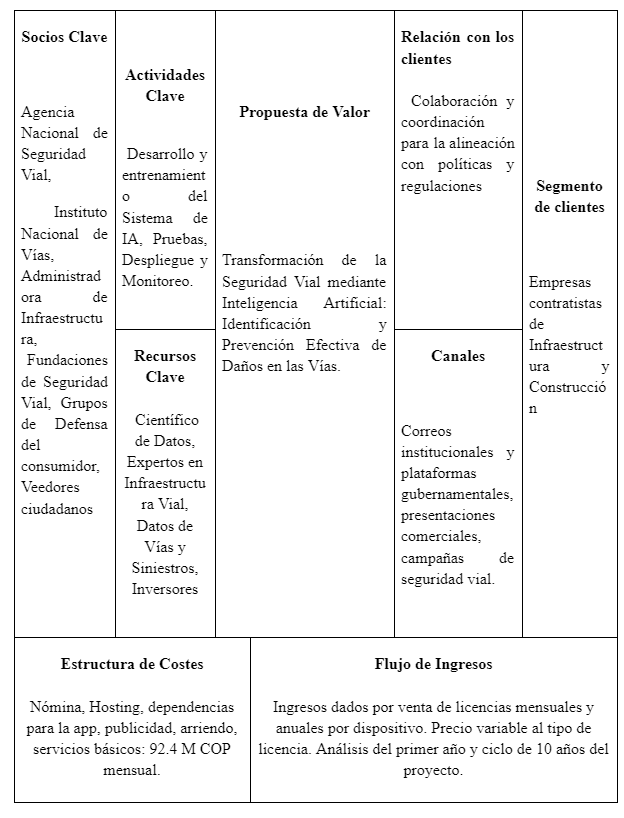

La idea de aplicar Inteligencia Artificial al estado de las vías en Colombia surgió tras ver un reel de la cuenta @elefantescol, que denuncia obras inconclusas en el país. Además del problema de corrupción, el deterioro de las carreteras es un riesgo para la seguridad vial. En 2023, se reportaron 4,029 muertes por accidentes de tráfico, y el 2.78% se atribuyó a malas condiciones viales. Se registraron 12,770 personas lesionadas, de las cuales el 0.41% también estuvo relacionado con el mal estado de las vías. Para abordar esta situación, se ha decidido usar la metodología CANVAS, adecuada para identificar problemas y desarrollar soluciones.
Representación del proyecto en metodología canvas.
